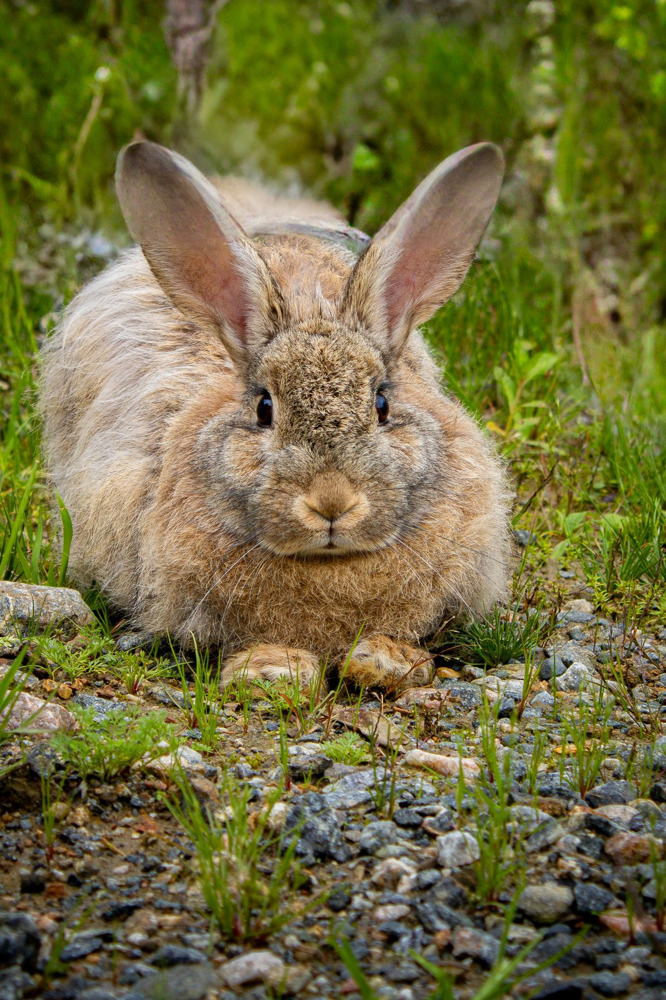
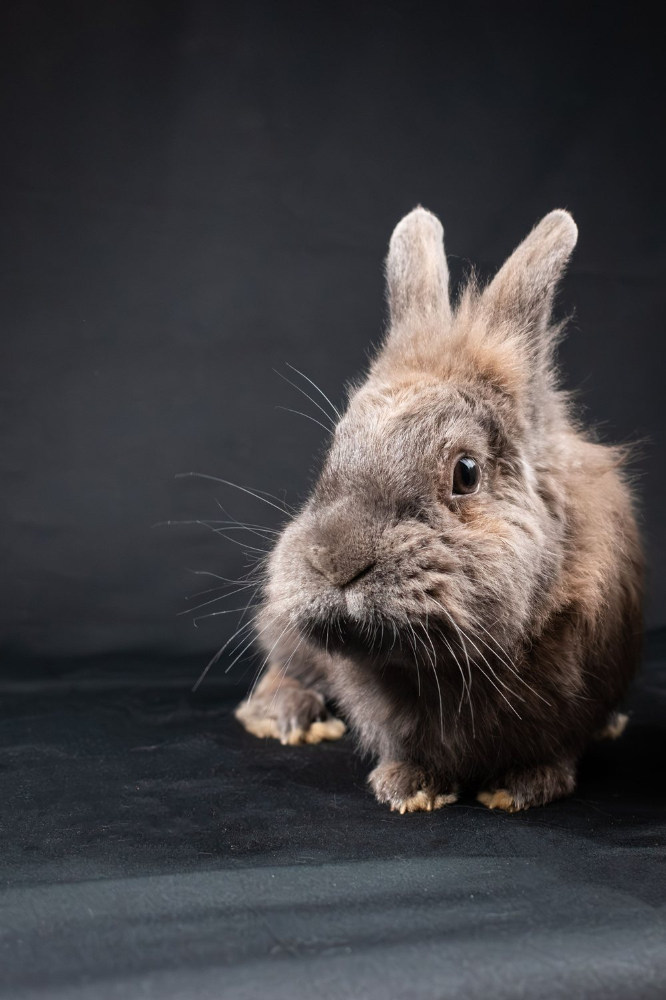

about
One person, checking by hand.

Here's the thing about learning how animals are actually treated in most industries: you can't unlearn it. It's not a small thing to sit with, the scale of it, the fact that animals are bred into existence by the billions and put through hell before anyone even notices. I'm not going to put that in front of you here. No graphic images, no shock tactics, you can find that yourself if you go looking, and I'll point you toward it if you want it.

Once you know, you know.
What I do want is for something on this site to make you pause, even for a second, and ask yourself a question you hadn't asked before. That's genuinely it. That's the whole goal. This site isn't trying to convert anyone who's already decided they don't care. It's for the people who do, or who might, if the information were put in front of them clearly instead of buried in ingredient lists and marketing spin.
Vegan and cruelty-free aren't the same thing, and you don't need to be fully vegan for the swaps on this site to matter. Start wherever feels manageable, and go into more detail.
What really grinds my gears: brands calling themselves cruelty-free while still selling in markets that legally require animal testing. Certifications with no real teeth behind them. A bunny logo slapped on a bottle with nobody checking if it means anything. It's confusing by design, and nobody has time to fact-check every label in the aisle, so that's the job here. I do the digging so you don't have to stand there squinting, wondering if you're being lied to.
I wasn't always this way, for what it's worth. I ate whatever was in front of me, bought whatever was cheapest, never once read an ingredients label or checked for certification logos. What actually changed things wasn't a single moment, it was a few conversations that made me genuinely uncomfortable, the kind I didn't ask for and mostly resented at the time. Turns out being annoyed at someone is not the same as being wrong. I still get things wrong now. This isn't a perfect household and I'm not interested in pretending it is.
if this has been useful to you
This site doesn't run on ads or affiliate spam disguised as advice, it runs on evenings and the odd cup of coffee. If a home kind has ever saved you a minute of squinting at an ingredients list, or talked you out of a brand you didn't realise you should skip, you're welcome to buy me one back.
support a home kind on ko-fi